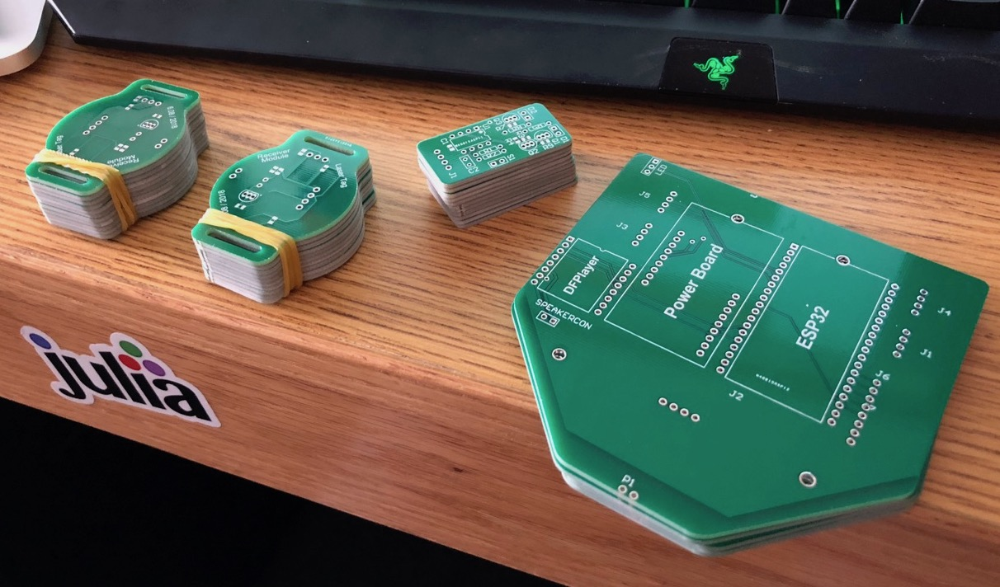
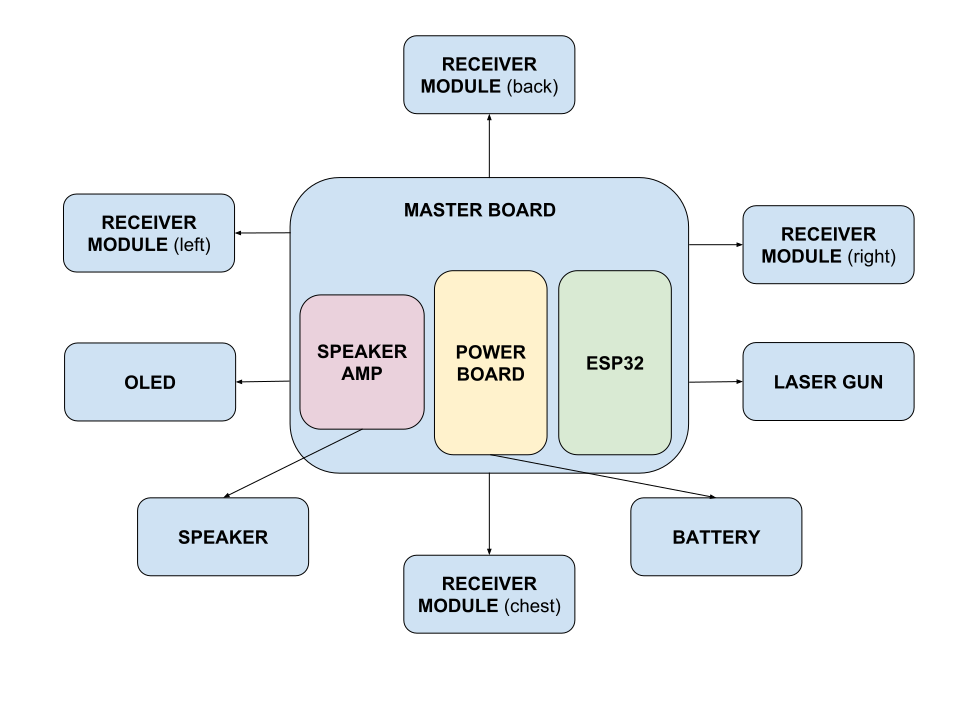
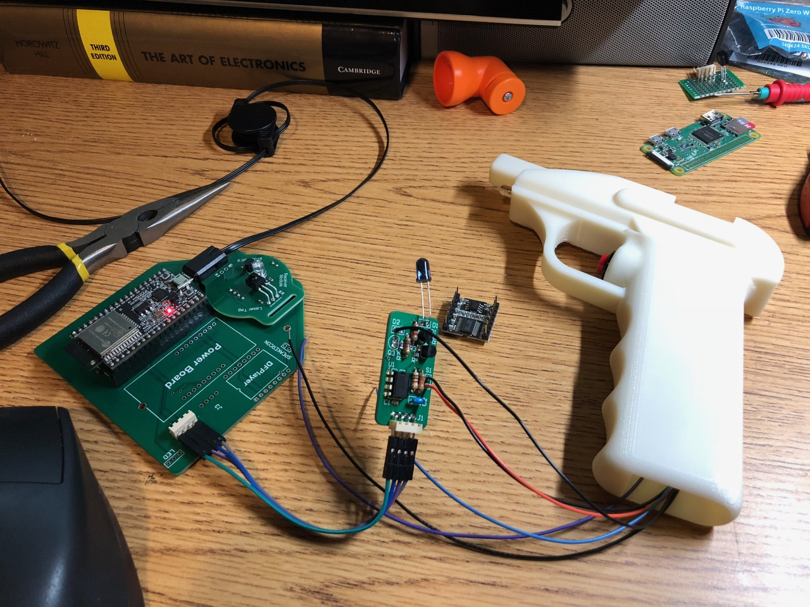
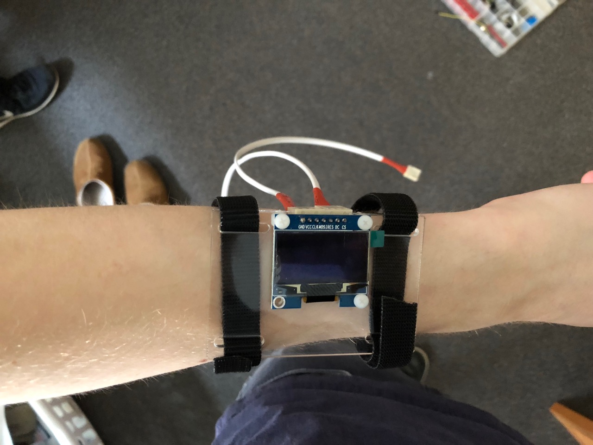

<center>
<h1 style="font-size: 3em">Laser Tag</h1>
</center>
### 6.08 Spring 2018 – August Trollbäck, Nickolas Stathas, Ramya Durvasula, Renee Silva
# Introduction
In a traditional game of laser tag, players, armed with infrared guns, fire at each other to
score points or disable their opponents. In an attempt to recreate the fun of this exciting
pasttime, without the price tag, our group designed <i>Laser Tag!!!</i>. Complete with custom
hardware and wearable armor, <i>Laser Tag!!!</i> was a great way to integrate and extend the
knowledge we gained from 6.08.
# System Overview
Our system consists of several modules: ESP32s, wearable "armor," a gameplay server, and a website.
The ESP32 code, written in Arduino, interfaces with several infrared receivers (the targets), a speaker,
and a handheld infrared emitter (the gun). Each ESP32 and its associated components are attached
to a wearable device, and are connected via wires. The ESP32s use HTML GET and POST requests to communicate
with the game server, which keeps track of the current game, its players, and all game actions. Additionally,
the game server keeps track of high scores. The website is used to start games, view scores during games, and
forceably end games if need be. Although originally intended to be played as a 2v2 game, and ultimately
demonstrated as a 3-player game, the software can handle any number of players.
Each player wears an OLED display on his or her wrist, which is wired to the ESP32. Upon starting, and
after connecting to WiFi, the OLED shows two options: Play and High Scores. The user navigates between menus
by pressing the trigger on the gun; two short presses is equivalent to pressing [A], and one long press
is equivalent to pressing [B]. The player can press [A] from the high scores list, which shows the top three
scores, to return to the main menu. When a player chooses to play the game, he or she is given different options
depending on the other players. If there are no games currently waiting to be started, the player will be able
to choose between three game modes; game modes are summarized below in "Game Options." After selecting game
modes, the player will choose his or her team, then his or her character name, and will then be directed
to a screen that says "Waiting for players to join...". After all players have joined, one person has to click
"Start Game" on the website, and the game will begin. The clock is synchronized on the website, the server,
and each of the player wrist displays, and a countdown shows every second. Throughout the game, the website
updates with hits and kills, and orders players in the table. The current leader is always displayed. The game
ends according to its specific end condition, and each of the ESPs displays game over, the leaderboard is
cleared, and the website alerts the user of the game winner and his or her score. The information displayed
on the ESP32 during all points of gameplay is summarized in the state machine below.
# Hardware
This was a very hardware intensive project. Because DIY laser tag systems are much too expensive,
it was necessary to create most of the hardware from scratch. While most of the system was completely
custom, some parts such as the IR receiver IC and
emitter LED were chosen from recommendations online.
With the goal of having several people play the game at once, with each player having several
wearable hit detectors (and emitter/laser gun), it would have been very difficult to produce
enough breadboards or perfboards. Instead, three different custom printed circuit boards (PCBs) were designed, and several of each type
was subsequently ordered from a Chinese fabricator. The three types of boards are a receiver
module, an emitter module, and a master board that connects to several receiver modules and
one emitter module.
Files for the gerbers sent to the fab are available in the downloads section below.
<center>

<br>
PCBs as they arrived from China
</center>
<br>
This is a block diagram of how the various hardware components
connect:
<center>

</center>
### Receiver module
The receiver modules have IR receivers that are activated when IR at a specific frequency (~56kHz)
hits them. Up to four receiver modules per player are supported - two on the arms, one soldered
directly to master board on the chest, and one on the back. Using this layout, it is possible for
a player to get hit from many angles.
<img src="media/receiver_schematic.png">|<img src="media/receiver_layout.png">
---|---
Receiver board schematic | Receiver board PCB layout
The receivers use a TSOP34856 IC, which is usually used in remote control applications. The only
external components it needs is a pullup resistor and bypass cap. It's possible to mount two
TSOP34856 ICs for a wider range of hit detection angles, but we only populated one per board.
The receiver modules also have
a very bright (when viewed directly) LED in the color of the player's team, which is switched
by the ESP32 through a BJT transistor.
### Emitter module
The emitter module is contained within the grip of the laser gun. The module produces IR pulses
tuned to the specific frequency the receivers accept. The module has an input and ouput trigger
data line to the ESP32 on the master board. The output trigger line directly connects the physical
trigger button on the laser gun to the ESP32. The input trigger line is used to start and stop emitting
IR pulses. Having the physical trigger signal and IR pulse signal be separate allows us to implement
features such as cooldown and ammo limiting.
<img src="media/emitter_schematic.png">|<img src="media/emitter_layout.png">
---|---
Emitter board schematic | Emitter board PCB layout
The circuit driving the IR emitter is a 555 timer. Viewed on a scope, the frequency generated is 54kHz.
The output of the 555 timer is amplified with a BJT transistor to drive the emitter at around 50mA
(the LED is rated for up to 100mA). The input trigger line coming from the ESP32 is used to pull the base
of the BJT to ground in order to toggle IR pulses.
### Master board
The master board serves as a centralized place to mount boards (ESP32, power board, DFPlayer)
and distribute power/signals to the emitter and receivers.
<img src="media/masterboard_schematic.png">|<img src="media/masterboard_layout.png">
---|---
Master board schematic | Master board PCB layout
This PCB was specifically designed to be less than 4" x 4" in size, so that it's within the $5
minimum price.
### Connectors/Cables
Cables were cut to length, stripped, crimped, and heat shrunk. For the laser gun cables,
it was necessary to
<img src="media/cable_crimps.jpg">|<img src="media/cables2.jpg">
---|---
Crimps before and after inserting to housing | Connectivity between boards
### Laser Gun
The laser gun was modeled in Autodesk inventor and designed so that it could be fitted with the IR
emitter LED inside the barrel and the driving circuitry in the handle. We used a panel mount button
glued into a 0.5" hole as the trigger. A slot was left open on the top of the gun to make assembly
easier. The smaller barrel is for a standard 5mm LED that would give visual indication of when the
laser gun is shooting.
Cutaway rendering of the assembly:
<img src="media/assembly2.png" width="60%" style="margin: 0 auto; display: block">
<center>

</center>
### OLED Mounting
The OLED was mounted to the wrist using laser-cut acrylic and velcro:
<center>

</center>
### Hardware Challenges
Unsurpisingly, there were a few small mistakes in the PCB designs.
- Attempting to use an input-only pin on the ESP32 as the IR emitter enable pin, solved by swapping two wires in
the cable.
- Not using the same OLED pin mapping that we used on the breadboard, solved by changing the OLED to use software serial
- PNP transistor used to control a visual LED on the laser gun didn't work, so we just didn't use visual light LEDs on
the laser gun.
# Software
## ESP32
### State Machine
This diagram shows the states and transitions of the UI displayed on the
OLED. To simplify the hardware, both buttons A and B are controlled by the
trigger button, using a long press or double press to differentiate the two.
<center>
<img src="media/ui_state_machine.svg">
</center>
## Server
Game managment and play happen entirely on the server. Through GET requests, users will be able
to see information about ongoing and previous games, such as all the actions that take place
(whether a person fired their gun or was hit), all the players currently in a game, all active games
taking place, and the overall highscores from all the games that have occurred. POST requests
handle changes to games, which consists of submitting actions that occured and hosting and joining games.
### API definitions:
- screen.h
```
void drawStrAt(SCREEN &dis, const char *str, ScreenPos pos, u8g2_uint_t x = 0, u8g2_uint_t y = 0);
```
The `drawStrAt` is used throughout the code to draw to the OLED. It takes a string to print
and use a `ScreenPos` bitfield to set the location.
ScreenPos is a byte type and includes the following enum-like members:
`T` for top, `M` for middle, `B` for bottom, `L` for left, `C` for center, `R` for right.
They can be ORed together (such as `T | L` for top left) to produce alignment.
`x` and `y` are then added to that allignment to produce an offset.
Thus, printing "Hello World!" 10 units below the center of the `oled` screen can be done with
`drawStrAt(oled, "Hello World!", C | M, 0, 10);`
- wifilib.ino
```
String do_POST(String req);
String do_GET(String req);
```
These functions send POST and GET requests to our single 6.08 endpoint using a
application/x-www-form-urlencoded body or query string respectively.
```
void wifi_auto_setup();
void wifi_connect(String network_name, String password = "");
```
These functions assist with setting up WiFi on boot.
- state.h
```
typedef enum {
MENU,
HIGHSCORE,
LOBBY,
GAME,
HOSTJOIN,
JOIN,
GAMECONFIG,
CHARSELECT,
TEAMSELECT,
ENDGAME
} UI_state_T;
```
```
typedef enum {
NONE,
READY,
} GAME_state_T;
```
These are the enums of all UI and GAME states as detailed below in a merged FSM.
```
typedef struct {
String status;
uint32_t game_length_oj;
uint32_t start_time;
uint16_t shoot_limit;
uint16_t immunity_limit;
uint32_t last_shot;
uint32_t last_hit;
String playerid;
uint8_t kills;
uint8_t deaths;
} GAME_data_T;
```
This is the struct in which local information about the current game is kept.
We instantiate only one global variable of this type.
Defining this struct instead of bare variables made unit testing functions
significanlty easier. In the future the ESP code will be much more adaptable to
continuous integration thanks to this.
- config.h
```
const int RCV_LED[4] = {5, 16, 33, 19};
const int RCV_DET[4] = {18, 17, 25, 23};
#define TRIGGER 35
#define GUN_LED 32
...
```
GPIO configurations were mostly taken through #define, but since we are
capable of handling 4 receivers at once, keeping them in an array makes it
easy to use range loops (`for (auto led:RCV_LED) {}`).
- main.ino
This is the file in which most of the substantial game code is located.
```
void update_ui_state();
void update_game_state();
```
These functions handle the UI/printing and game actions (shooting/getting hit)
respectively. They consist of monolithic switch-cases that handle all state
transitions.
The function below gets called on a 5ms timer interrupt.
```
void onTimer() {
/// TRIGGER AND UX BUTTON EMULATION
// Debounce trigger switch
static uint16_t trigstate = 0;
trigstate <<= 1;
trigstate |= digitalRead(TRIGGER);
trigstate |= 0xe000;
bool triger_edge = (trigstate == 0xf000);
// Hold this value until manually cleared
trigger |= triger_edge;
```
The code above is the debouncer for the trigger switch. Its assembly footprint is
tiny, but it works great. trigger_edge debounces and detects rising edges, and
those constantly get ORed into a global state variable to be handled by our FSMs.
The reason constant ORing is necessary is because `trigger` is volatile and is on
for exactly one cycle of this timer -- 5ms. This is likely not enough time
considering the delays imposed on the FSM updates due to printing and doing
HTTP requests. ORing gives the FSM a chance to poll this variable and clear
it at its discretion.
```
// Determine if this also is a double tap or a long hold
static uint32_t last_rising = 0;
static bool unbroken = false;
if (unbroken) {
if (digitalRead(TRIGGER)) {
// Serial.println("BROKEN");
unbroken = false;
}
else if (millis() - last_rising > LONG_HOLD) {
// Serial.println("LONG HOLD");
butB = true;
// Break the streak to cause an edge.
unbroken = false;
}
}
if (triger_edge) {
// Serial.println("shooooot");
if (millis() - last_rising < DOUBLE_TAP) {
// Serial.println("DOUBLE_TAP");
butA = true;
// Prevent quadruple taps and so forth
unbroken = false;
last_rising = 0;
}
else {
last_rising = millis();
unbroken = true;
}
}
```
This above code uses the trigger_edge to emulate our A and B buttons.
A gets triggered on a detected *double tap*, and B on a *long hold*.
```
/// RECEIVER DETECTION
static bool rcv_debounce_state[LEN(RCV_DET)] = {};
static uint32_t rcv_debounce_edge[LEN(RCV_DET)] = {};
for (size_t i = 0; i < LEN(RCV_DET); ++i) {
if (digitalRead(RCV_DET[i]) == LOW) {
if (!rcv_debounce_state[i]) {
rcv_debounce_edge[i] = millis();
rcv_debounce_state[i] = true;
}
else if (millis() - rcv_debounce_edge[i] > RCV_SETUP) {
rcv_state[i] = true;
}
}
else {
if (rcv_debounce_state[i]) {
// Serial.print(i); Serial.print(" lasted for "); Serial.println(millis() - rcv_debounce_edge[i]);
rcv_debounce_edge[i] = millis();
rcv_debounce_state[i] = false;
}
else if (millis() - rcv_debounce_edge[i] > RCV_HOLD) {
rcv_state[i] = false;
}
}
}
// Update receiver LEDs
for(int i = 0; i < LEN(RCV_LED); i++) digitalWrite(RCV_LED[i], rcv_state[i]);
}
```
This last part of the, arguably long timer interrupt, deals with the receivers
being shot at. `LEN` here is just a macro that wraps `sizeof`.
This is what we call a SETUP and HOLD debouncer that solves the TV remote problem.
To tune it, one needs to specify the SETUP and HOLD times. To trigger a rising edge,
the signal must have remained HIGH for at least SETUP milliseconds.
The falling edge triggers HOLD milliseconds after the signal becomes consistently LOW.
By tuning the SETUP threshold we solve the TV remote issue and by tuning
the HOLD threshold we deal with EMI or other hardware issues.
## Software Challenges
Determining a way to end time-based games was a struggle. Originally we wanted to implement a
server that had web-socket capabilities so we would be able to long-pull from the ESP32 to
determing when a game should end. This proved to be a bigger obstacle than we anticipated, so we
decided to have the end time determined by when the host created a game, and whenever a player joins
that game through a POST request, it returns the time left in the game. This way, there is no need
for any kind of "syncronization" of clocks multiple times.
# Energy Management
Minimizing energy usage was not a top priority on this project, but we believe our
system is still fairly efficient. Because the high current devices such as the speaker
(up to 1A draw) and LEDs (up to ~100mA total) are only on intermittently, such as during
shooting or being hit, the most significant power draw is from items in the base kit
such as the ESP32 and OLED. If we wanted to reduce power more, it would be possible
to take measures such as decreasing the volume of the speaker, or using PWM to make
the LEDs less bright.
# Parts List
Part | PN | Purpose
-----|-------|--------
Male connector header | [S9490-ND](https://www.digikey.com/products/en?keywords=S9490-ND) | Universal connector on PCBs
Female connector housing | [S9437-ND](https://www.digikey.com/products/en?keywords=S9437-ND) | Mating connector on cables
Connector crimps | [S9473CT-ND](https://www.digikey.com/products/en?keywords=S9473CT-ND) | Crimps for cables
Resistor 10K | [RMCF0805JT10K0CT-ND](https://www.digikey.com/product-detail/en/stackpole-electronics-inc/RMCF0805JT10K0/RMCF0805JT10K0CT-ND/1942577) | Pullup resistors
Resistor 1K | [RMCF0805JT1K00CT-ND](https://www.digikey.com/product-detail/en/stackpole-electronics-inc/RMCF0805JT1K00/RMCF0805JT1K00CT-ND/1942557) | BJT base resistors
Capacitor 0.1uF | [1276-2448-1-ND](https://www.digikey.com/product-detail/en/samsung-electro-mechanics/CL21B104KOANNNC/1276-2448-1-ND/3890534) | IC bypass caps
Resistor 160 ohm | [RMCF0805JT160RCT-ND](https://www.digikey.com/product-detail/en/stackpole-electronics-inc/RMCF0805JT160R/RMCF0805JT160RCT-ND/5049817) | LED current limiting
Capacitor 10nF | [1276-1078-1-ND](https://www.digikey.com/product-detail/en/samsung-electro-mechanics/CL21B103KBCNNNC/1276-1078-1-ND/3889164) | 555 timer control voltage
Transistor PNP | [2N3904FS-ND](https://www.digikey.com/product-detail/en/on-semiconductor/2N3904BU/2N3904FS-ND/1413) | Switching LEDs
Bright blue LED | [C503B-BAS-CZ0A0451-ND](https://www.digikey.com/product-detail/en/cree-inc/C503B-BAS-CZ0A0451/C503B-BAS-CZ0A0451-ND/2341538) | LEDs for blue team
Bright red LED | [C503B-RAS-CA0C0AA1-ND](https://www.digikey.com/product-detail/en/cree-inc/C503B-RAS-CA0C0AA1/C503B-RAS-CA0C0AA1-ND/6561759) | LEDs for red team
Flat 4 conductor cable | [CN263-100-ND](https://www.digikey.com/product-detail/en/cnc-tech/530-26-04-WH-0100F/CN263-100-ND/3442477) | For making cables
IR receiver | [TSOP34856-ND](https://www.digikey.com/products/en?keywords=TSOP34856) | 56kHz receiver
IR emitter | [751-1203-ND](https://www.digikey.com/products/en?keywords=751-1203-ND) | 100mA LED emitter
Panel mount button | [EG1930-ND](https://www.digikey.com/products/en?keywords=EG1930-ND) | Laser gun trigger
LM555 timer IC | - | 56kHz square wave generation
Resistor 500 ohm | - | 555 timer configuration
Resistor 13K | - | 555 timer configuration
Resistor 68 ohm | - | IR LED current limiting
DFPlayer Mini | [DFPlayer Mini](https://www.dfrobot.com/wiki/index.php/DFPlayer_Mini_SKU:DFR0299) | Speaker amplifier
3W 8ohm speaker | - | speakers
# Downloads
- [Receiver module PCB gerbers](downloads/receiver_gerber.zip)
- [Emitter module PCB gerbers](downloads/emitter_gerber.zip)
- [Master board PCB gerbers](downloads/masterboard_gerber.zip)